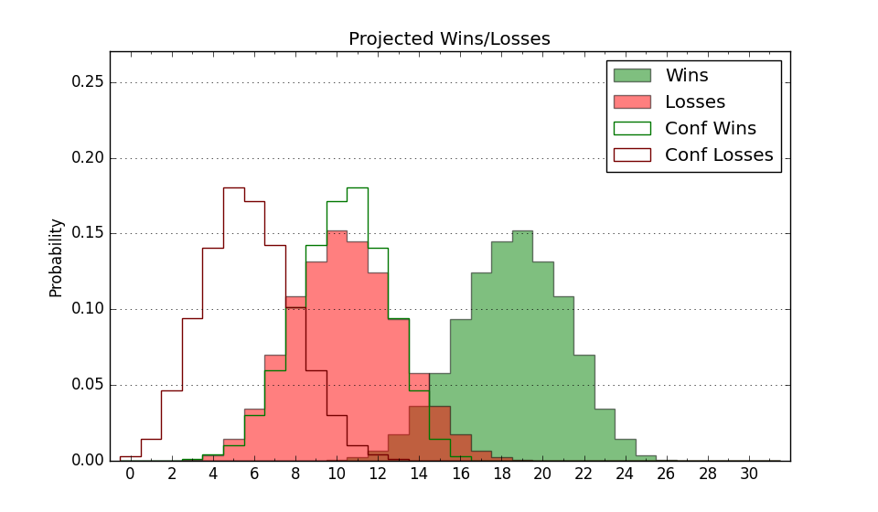

| Home | Game Probabilities | Conferences | Preseason Predictions | Odds Charts | NCAA Tournament |
| City: | High Point, North Carolina | |
| Conference: | Big South (1st)
| |
| Record: | 0-0 (Conf) 6-3 (Overall) | |
| Ratings: | Comp.: 1.0 (156th) Net: 6.6 (111th) Off: 114.5 (38th) Def: 107.9 (263rd) SoR: 2.3 (151st) |
| Remaining | ||||||
|---|---|---|---|---|---|---|
| Date | Opponent | Win Prob | Pred. | |||
| 12/16 | @ Georgia (115) | 25.8% | L 71-79 | |||
| 12/19 | UNC Greensboro (113) | 53.8% | W 75-74 | |||
| 12/22 | Canisius (161) | 66.2% | W 80-75 | |||
| 12/30 | Bellarmine (248) | 79.4% | W 77-68 | |||
| 1/3 | @ Radford (197) | 44.6% | L 72-74 | |||
| 1/6 | Gardner Webb (198) | 73.3% | W 76-69 | |||
| 1/10 | UNC Asheville (202) | 73.6% | W 78-71 | |||
| 1/17 | @ Presbyterian (283) | 64.1% | W 77-73 | |||
| 1/20 | Charleston Southern (348) | 93.6% | W 85-66 | |||
| 1/24 | @ USC Upstate (286) | 65.0% | W 77-72 | |||
| 1/27 | @ Winthrop (176) | 40.9% | L 77-79 | |||
| 1/31 | Longwood (148) | 63.2% | W 74-70 | |||
| 2/3 | Presbyterian (283) | 85.9% | W 81-68 | |||
| 2/7 | @ UNC Asheville (202) | 45.0% | L 74-76 | |||
| 2/10 | @ Gardner Webb (198) | 44.7% | L 71-73 | |||
| 2/14 | USC Upstate (286) | 86.3% | W 81-68 | |||
| 2/17 | Radford (197) | 73.2% | W 76-70 | |||
| 2/24 | @ Charleston Southern (348) | 81.0% | W 80-71 | |||
| 2/28 | Winthrop (176) | 70.2% | W 81-75 | |||
| 3/2 | @ Longwood (148) | 33.5% | L 70-75 | |||
| Previous | Game Score | |||||
| Date | Opponent | Win Prob | Result | Off | Def | Net |
| 11/11 | @Wofford (201) | 44.8% | L 98-99 | 11.6 | -12.9 | -1.3 |
| 11/14 | @Queens (259) | 57.1% | L 72-74 | -2.2 | 8.2 | 6.0 |
| 11/20 | (N) Iona (170) | 55.1% | W 82-68 | 9.5 | 13.2 | 22.7 |
| 11/21 | (N) Illinois St. (214) | 62.1% | W 74-72 | 8.7 | -9.5 | -0.8 |
| 11/22 | (N) Hofstra (85) | 31.9% | L 92-97 | 13.5 | -8.7 | 4.8 |
| 11/29 | Morgan St. (352) | 94.0% | W 77-59 | -8.3 | 9.6 | 1.4 |
| 12/2 | @North Florida (301) | 67.7% | W 86-79 | 8.7 | -3.9 | 4.9 |
| 12/5 | Western Carolina (151) | 64.2% | W 97-71 | 17.5 | 11.6 | 29.1 |
| 12/8 | North Carolina A&T (350) | 93.8% | W 75-62 | -10.1 | 1.4 | -8.7 |
| Stats & Trends | |||||
|---|---|---|---|---|---|
| Current | Day | Week | Month | Season | |
| Composite | 1.0 | -0.1 | +3.4 | +12.5 | +12.5 |
| Comp Rank | 156 | -6 | +35 | +137 | +136 |
| Net Efficiency | 6.6 | -0.1 | +2.3 | +1005.6 | -- |
| Net Rank | 111 | +1 | +22 | +163 | -- |
| Off Efficiency | 114.5 | +0.3 | -0.3 | +114.5 | -- |
| Off Rank | 38 | +4 | -- | +236 | -- |
| Def Efficiency | 107.9 | -0.4 | +2.6 | +891.1 | -- |
| Def Rank | 263 | -6 | +33 | +11 | -- |
| SoS Rank | 314 | -- | -49 | -40 | -- |
| Exp. Wins | 18.5 | +0.1 | +2.0 | +7.3 | +7.4 |
| Exp. Conf Wins | 10.3 | +0.1 | +1.2 | +4.2 | +4.2 |
| Conf Champ Prob | 31.0 | +0.6 | +13.3 | +28.5 | +28.5 |

| Advanced Stats | ||
|---|---|---|
| Stat | Value | Rank |
| Off Eff FG % | 0.532 | 89 |
| Off Ast Ratio | 0.117 | 296 |
| Off ORB% | 0.344 | 34 |
| Off TO Rate | 0.155 | 211 |
| Off FT Ratio | 0.446 | 20 |
| Def Eff FG % | 0.514 | 229 |
| Def Ast Ratio | 0.143 | 208 |
| Def ORB% | 0.222 | 39 |
| Def TO Rate | 0.120 | 325 |
| Def FT Ratio | 0.424 | 311 |